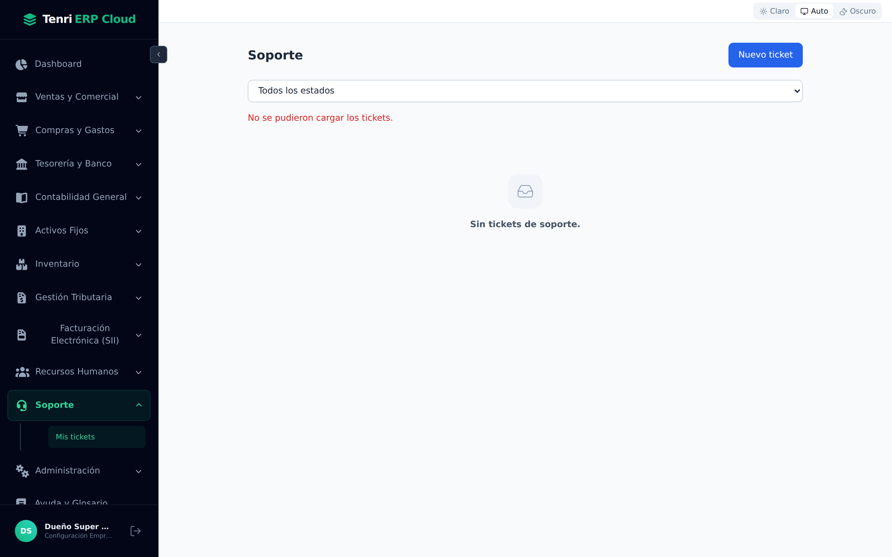
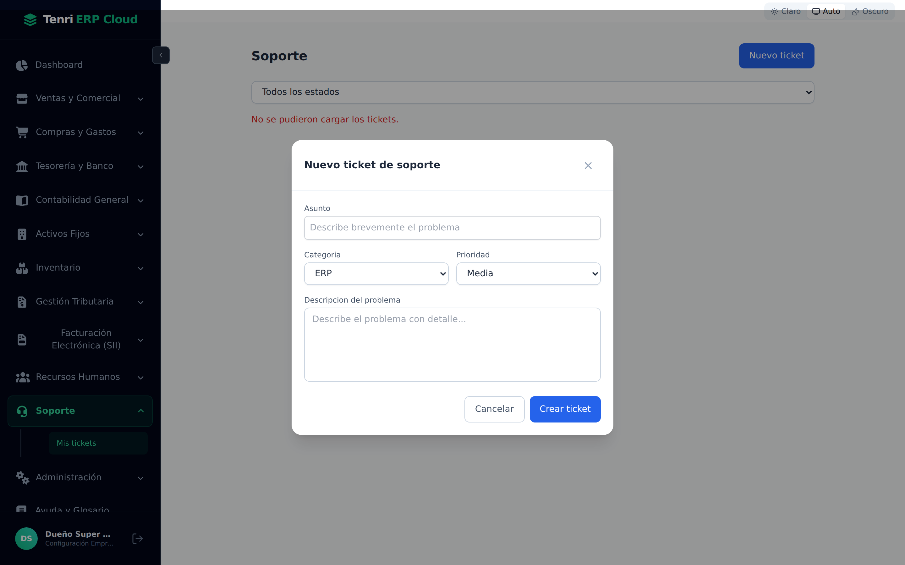
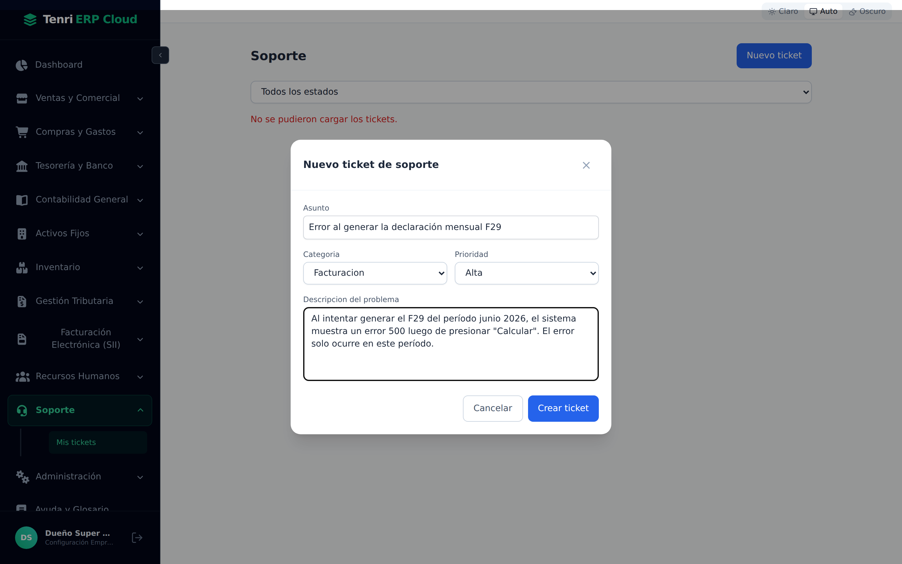

Abra y haga seguimiento de tickets de ayuda directamente desde el ERP. Todo el historial de conversación con el equipo de soporte, en un solo lugar, sin salir del sistema.

Un canal directo con el equipo de Tenri, integrado al ERP.
El módulo Soporte permite abrir, consultar y responder tickets de ayuda sin salir de Tenri ERP Cloud. Cada ticket conserva el historial completo de mensajes entre la empresa y el equipo de soporte, con su estado y prioridad siempre visibles.
| Función | Descripción |
|---|---|
| Mis tickets | Listado de todos los tickets de su empresa, con estado, prioridad y número de mensajes. |
| Nuevo ticket | Formulario para abrir una solicitud nueva: asunto, categoría, prioridad y descripción detallada. |
| Detalle / conversación | Vista del hilo de mensajes del ticket, con posibilidad de responder mientras esté abierto. |
| Filtro por estado | Filtre su lista por: Todos, Nuevo, Abierto, Esperando respuesta, Resuelto o Cerrado. |
La bandeja de entrada de todas sus solicitudes de soporte.
Al ingresar a Soporte → Mis tickets, verá el listado de tickets de su empresa. Si no existen solicitudes previas, la pantalla muestra el estado vacío "Sin tickets de soporte".
Cuando existen tickets, cada tarjeta de la lista muestra:
| Dato | Descripción |
|---|---|
| Asunto | El título del ticket, truncado si es muy largo. |
| Código | Identificador único del ticket (p. ej. TKT-0042). |
| Mensajes | Cantidad de mensajes en el hilo de conversación. |
| Estado | Badge de color: Nuevo Abierto Esperando resp. Resuelto Cerrado |
| Prioridad | Badge secundario: Baja, Media, Alta o Crítica. |
| Fecha | Fecha de creación del ticket. |
Filtrar por estado. Use el selector "Todos los estados" para acotar la lista. Puede filtrar por cualquier estado: Nuevo, Abierto, Esperando respuesta, Resuelto o Cerrado. La lista se actualiza automáticamente al cambiar el filtro.
Abra una solicitud de soporte en menos de un minuto.
Presione el botón Nuevo ticket (arriba a la derecha) para abrir el formulario de creación. Complete los cuatro campos y haga clic en Crear ticket:

| Campo | Descripción | Opciones disponibles |
|---|---|---|
| Asunto | Resumen breve del problema. Sea específico para que soporte entienda el contexto de inmediato. | Texto libre |
| Categoría | Área del sistema relacionada con el problema reportado. | ERP · Facturación · Soporte general |
| Prioridad | Nivel de urgencia del problema. Use Crítica solo si el problema detiene la operación del negocio. | Baja · Media · Alta · Crítica |
| Descripción | Explique el problema con detalle: qué acción realizó, qué esperaba y qué ocurrió en cambio. | Texto libre (campo grande) |

Una buena descripción acelera la resolución. Incluya: (1) qué intentaba hacer, (2) en qué pantalla o módulo ocurrió, (3) qué mensaje de error apareció exactamente, y (4) si el problema ocurre siempre o solo en ciertos casos (período, empresa, usuario). Si puede, adjunte el número de RUT, folio o período afectado.
De la apertura al cierre, siempre con visibilidad del estado.
Cada ticket avanza por estados que indican en qué etapa de resolución se encuentra. El equipo de soporte de Tenri gestiona las transiciones; usted puede ver el estado en cualquier momento:
| Estado | Significado | ¿Puede responder? |
|---|---|---|
| Nuevo | Ticket creado, aún no revisado por soporte. | Sí |
| Abierto | Soporte está trabajando en la resolución. | Sí |
| Esp. respuesta | Soporte requiere más información de su parte. | Sí — responda para avanzar |
| Resuelto | El problema fue solucionado por el equipo. | No |
| Cerrado | Ticket archivado (resuelto + confirmado). | No |
El hilo completo de mensajes, en orden cronológico.
Al hacer clic en un ticket de la lista, se abre la vista de detalle. Esta pantalla muestra toda la información del ticket y el hilo de mensajes entre su empresa y el equipo de soporte:
| Elemento | Descripción |
|---|---|
| Encabezado del ticket | Asunto, código, categoría, prioridad y estado actual del ticket. |
| Asignado a | El agente de soporte de Tenri responsable de su caso (si ya fue asignado). |
| Hilo de mensajes | Conversación cronológica. Los mensajes del equipo de soporte aparecen con la etiqueta Soporte; los suyos aparecen con su nombre. |
| Campo de respuesta | Área de texto para agregar un nuevo mensaje al hilo. Visible solo si el ticket está activo (no resuelto ni cerrado). |
| Botón Responder | Envía su mensaje y actualiza el hilo en tiempo real. |
Cómo responder en un ticket:
Cómo obtener la resolución más rápida.
| Situación | Recomendación |
|---|---|
| Problema crítico | Abra el ticket con prioridad Crítica y describa el impacto en la operación: qué proceso está detenido y desde cuándo. |
| Error del sistema | Indique la pantalla exacta, el mensaje de error completo, el período o folio afectado, y los pasos para reproducir el error. |
| Consulta de uso | Use categoría ERP y prioridad Media o Baja. Describa qué intenta hacer y en qué módulo. |
| Problema de facturación / SII | Use categoría Facturación e incluya el RUT receptor, folio del DTE, y el código o mensaje de error del SII. |
| Seguimiento | Revise el ticket en el ERP: si el estado es Esp. respuesta, soporte le ha preguntado algo. Responda para desbloquear la resolución. |
Los tickets son visibles solo para los usuarios de su empresa y el equipo de soporte de Tenri. No comparta en los mensajes credenciales, contraseñas, ni datos personales de terceros más allá de lo necesario para diagnosticar el problema. Tenri ERP Cloud opera bajo la Ley 19.628 y la Ley 21.719 de protección de datos personales.
El módulo Soporte conecta a su empresa directamente con el equipo de Tenri: abra tickets, siga su avance y mantenga el historial de conversación sin salir del ERP.
Lista con estado, prioridad y mensajes de cada solicitud. Filtre por estado en un clic.
Formulario rápido: asunto, categoría, prioridad y descripción detallada del problema.
Hilo de mensajes bidireccional. Responda mientras el ticket está activo para agilizar la resolución.